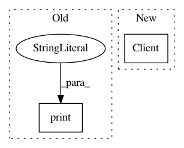

5d6747f7a58c6cd088b70adbecfce05e9b8ca4f3,mltsp/run_in_docker_container.py,,featurize_in_docker_container,#Any#Any#Any#Any#Any#Any#Any#,16
Before Change
"mltsp/featurize"]
process = Popen(cmd, stdout=PIPE, stderr=PIPE)
stdout, stderr = process.communicate()
print("\n\ndocker container stdout:\n\n", str(stdout),
"\n\ndocker container stderr:\n\n", str(stderr), "\n\n")
// copy all necessary files produced in docker container to host
for file_suffix in [
"features.csv", "features_with_classes.csv", "classes.pkl"]:
After Change
try:
// Instantiate Docker client
client = Client(base_url="unix://var/run/docker.sock")
// Create container
cont_id = container_name = client.create_container(
"mltsp/featurize",
volumes={"/home/mltsp": "", "/Data": ""})["Id"]
In pattern: SUPERPATTERN
Frequency: 4
Non-data size: 2
Instances
Project Name: cesium-ml/cesium
Commit Name: 5d6747f7a58c6cd088b70adbecfce05e9b8ca4f3
Time: 2015-02-24
Author: a.crellinquick@gmail.com
File Name: mltsp/run_in_docker_container.py
Class Name:
Method Name: featurize_in_docker_container
Project Name: automl/auto-sklearn
Commit Name: 8442321b9b7a7cef7e3806b525965c36cea1549e
Time: 2020-09-25
Author: feurerm@informatik.uni-freiburg.de
File Name: examples/60_search/example_parallel_manual_spawning.py
Class Name:
Method Name:
Project Name: data61/python-paillier
Commit Name: 8184b9fdf51e3f75835fe1f2d56c294d16686241
Time: 2017-06-20
Author: giorgio.patrini@anu.edu.au
File Name: examples/federated_learning_with_encryption.py
Class Name:
Method Name:
Project Name: cesium-ml/cesium
Commit Name: dd4ebd98a0026f626242f30cf9688d61b4798af1
Time: 2015-02-27
Author: a.crellinquick@gmail.com
File Name: mltsp/custom_feature_tools.py
Class Name:
Method Name: extract_feats_in_docker_container